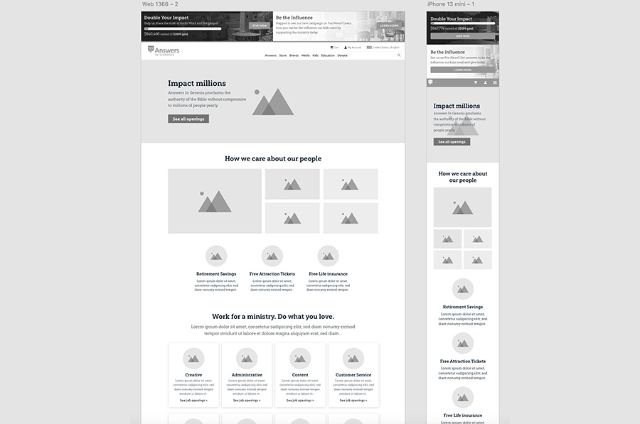

Sell the user to work for Answers in Genesis by telling a story
Work chevron_right AiG Jobs Page

Work chevron_right AiG Jobs Page
Answers in Genesis offers job opportunities for individuals committed to promoting a biblical worldview. The company was struggling to receive job candidates, and needed a sharable page.
My Role:
Sell the user to work for Answers in Genesis by telling a story
Increase job applications submitted through the jobs page.
Reduce jobs page maintenance cost.
The prior jobs page was a list of jobs. Users are less likely to click than to scroll, until they deem the source as credible.

The new jobs page provided insight about working for Answers in Genesis. It gives users a reason to apply.
Micro animations were added to the page to increase user engagement.